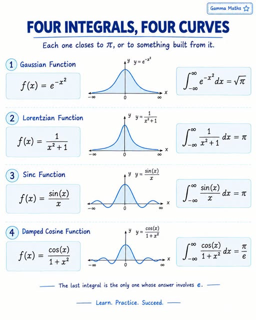

f =(x)=> 1 / exp( x*x );
f =(x)=> 1 / ( x * x + 1 );
f =(x)=> sin( x ) / x;
f =(x)=> cos( x ) / ( 1 * x * x );

| Var | Value | Type | Description |
|---|---|---|---|
| fn | String | Callback Function | |
| lo | Real | Lower X Bound | |
| hi | Real | Upper X Bound | |
| steps | Natural | Number of Samples | |
| ox | Real | Origin X | |
| oy | Real | Origin Y | |
| sx | Real | Scale X | |
| sy | Real | Scale Y |